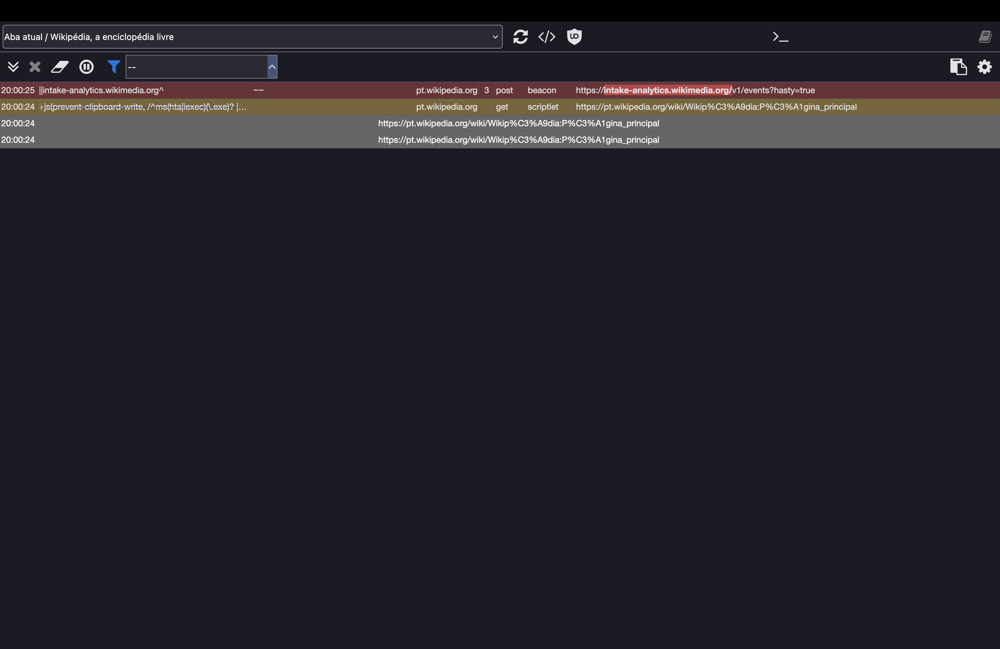
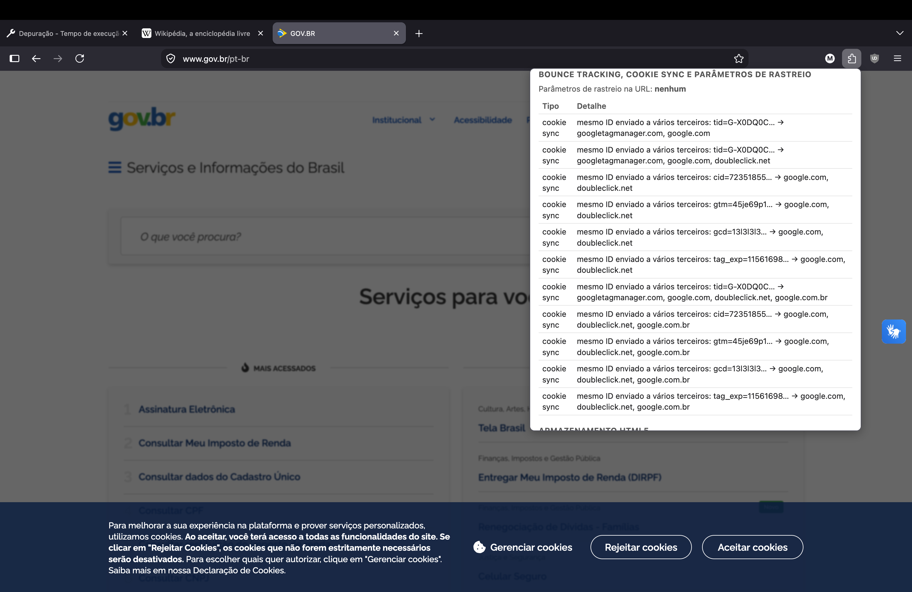
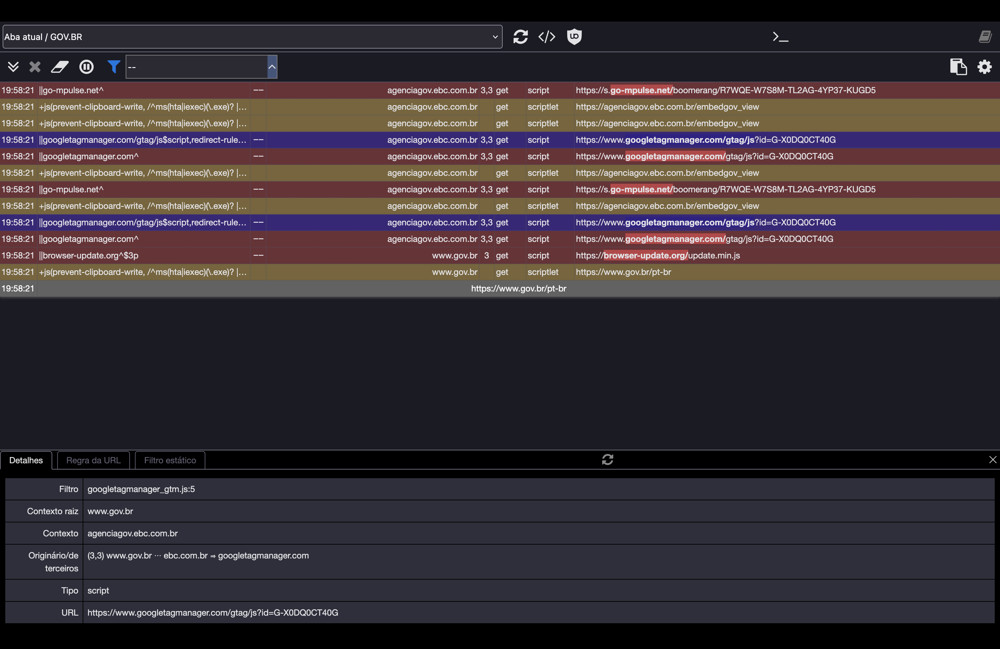
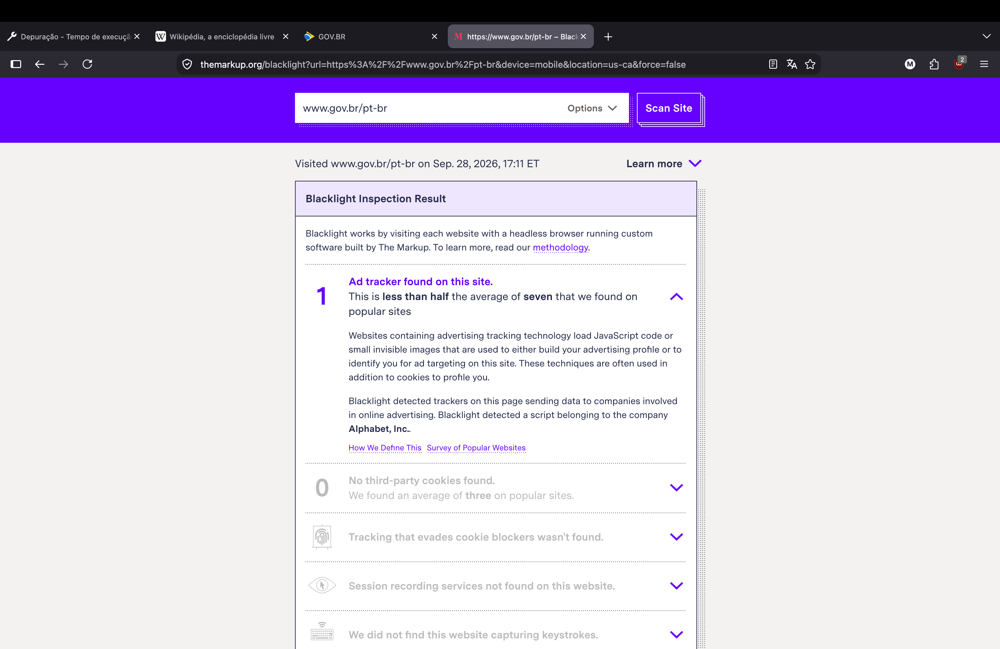
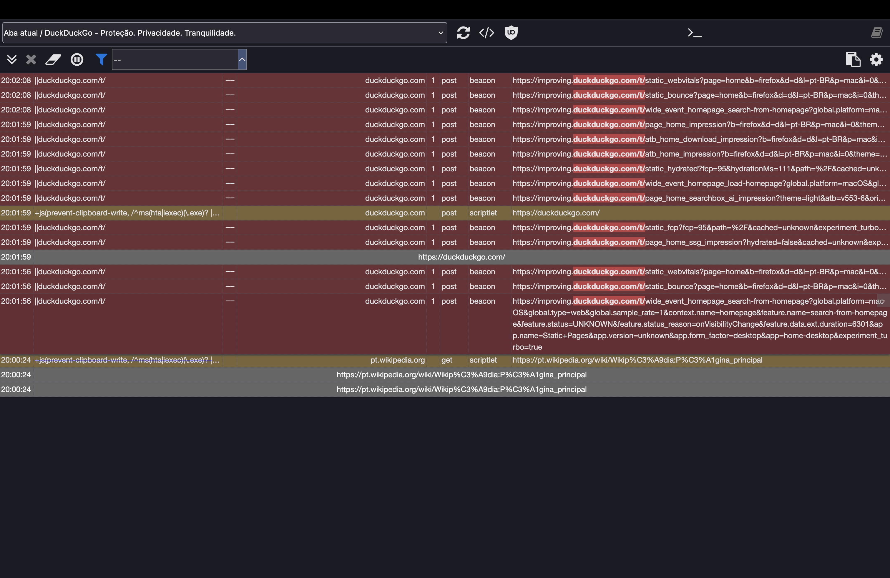
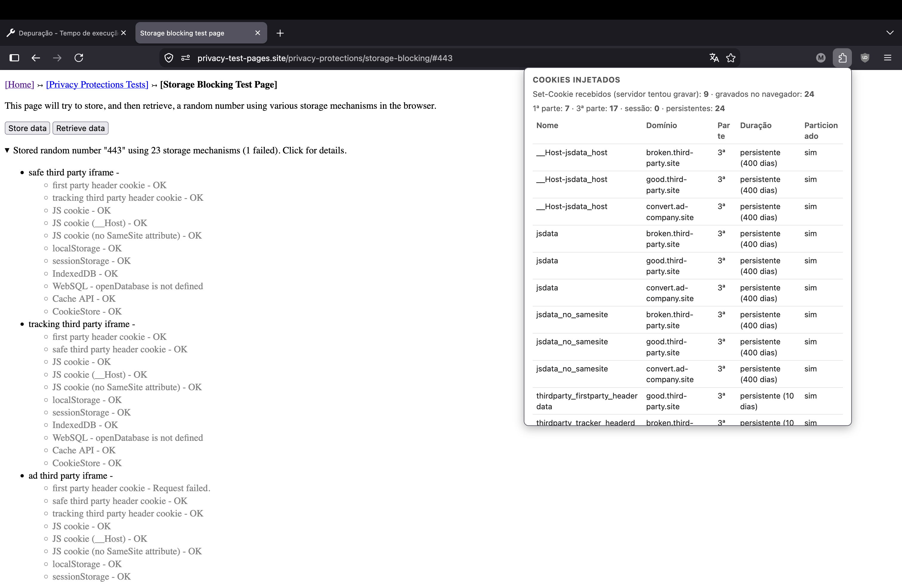
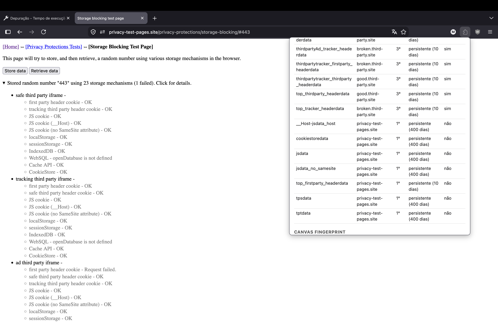
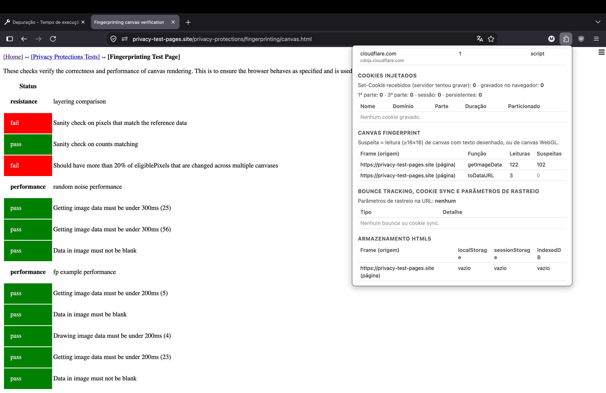
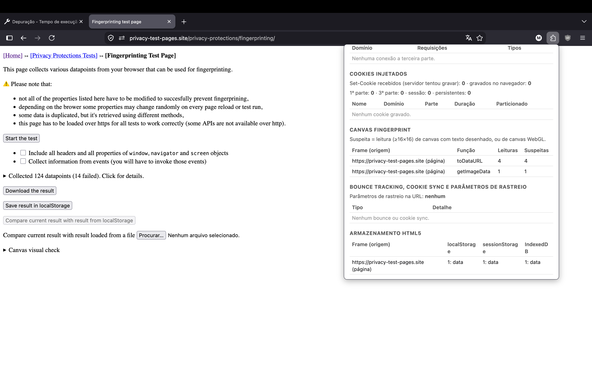

Avaliação Intermediária de Cibersegurança, Insper. Mateus Porto Pereira de Paiva, matrícula 23620308.
Repositório: github.com/Mateus-PortoPP/cyber_PI
A Rastro (Manifest V2) mostra, por aba: domínios de terceira parte (eTLD+1 diferente do da página, via webRequest);
cookies injetados, por Set-Cookie e cookies.onChanged, separados em primeira ou terceira parte e sessão ou persistente;
armazenamento HTML5 por frame; canvas fingerprint, interceptando toDataURL, toBlob, getImageData,
convertToBlob e readPixels (suspeita: leitura de pelo menos 16×16 de um canvas com texto ou WebGL); bounce tracking,
por redirect HTTP, client_redirect ou saída em menos de 10 s sem interação após um link; cookie sync, por um mesmo valor com
cara de ID enviado a dois ou mais terceiros; parâmetros de rastreio na URL; e a nota da seção 5. Instalação no README.md.
*_ublock*.png. Bloqueio do uBlock aparece na aba Rede como "Bloqueado por uBlock Origin"; NS_ERROR_* é falha da própria requisição.browser.cookies.getAll; falhas das páginas de teste foram reproduzidas com a extensão removida.Domínios de teste do privacy-test-pages.site: bad.third-party.site (rastreador que o DDG bloqueia),
broken.third-party.site (rastreador não bloqueado) e good.third-party.site (terceiro que não rastreia). Os três têm
o mesmo eTLD+1, third-party.site, o que explica parte das divergências. Quando a página não reporta resultado, o
"esperado" é o comportamento descrito nela.
| Teste | Esperado (reportado pela página) | Resultado do plugin | Explicação da divergência |
|---|---|---|---|
| Tracker Reporting: 1 major tracker loaded via script Figura 1; apêndice: figura 30 |
1 rastreador: <script src="//doubleclick.net/tracker.js"> |
doubleclick.net, 1 requisição, script. Nota 98. |
Detecção igual. Na aba Rede (figura 30) a requisição sai e volta como html, 0 B, NS_ERROR_CORRUPTED_CONTENT: o domínio real não serve JavaScript nesse caminho. A proteção do Firefox no nível Padrão não bloqueia o script. O plugin conta a tentativa de conexão, não se o script rodou. |
| Tracker Reporting: 1 major tracker with surrogate Figura 2 |
1 rastreador (doubleclick.net), que o DDG trocaria por um script inofensivo |
doubleclick.net, 1 requisição, script. Nota 98. |
O plugin não injeta surrogate, só observa; registra a requisição original. |
| Tracker Reporting: 1 major tracker loaded via img Figura 3 |
1 rastreador via <img src="//facebook.com/tr?test=1"> |
facebook.com, 1 requisição, image, 1 cookie de terceira parte persistente. Nota 94 (−2, −3, −1). |
Sem divergência. O plugin mostra também o cookie de terceira parte que a resposta do pixel gravou. |
| Tracker Reporting: Image loaded via document fragment Figura 4 |
1 rastreador (facebook.com) criado via document fragment |
facebook.com, 1 requisição, image. Nota 98. |
Sem divergência. A forma de inserir o elemento no DOM não muda a requisição. |
| Tracker Reporting: document fragment [Delay 5s] Figura 5 |
Mesmo rastreador, 5 s depois do carregamento | facebook.com, 1 requisição, image. Nota 98. |
Sem divergência. O listener de rede fica ativo a vida inteira da página. |
| Tracker Reporting: 1 major tracker loaded via fetch Figura 6 |
"Tracker loaded" (fetch para facebook.com) |
facebook.com, 1 requisição, xmlhttprequest. Nota 98. |
Sem divergência. O Firefox classifica fetch() como xmlhttprequest no webRequest. |
| Tracker Reporting: via fetch [Delay 5s] Figura 7 |
"Tracker loaded", 5 s depois do carregamento | facebook.com, 1 requisição, xmlhttprequest. Nota 98. |
Sem divergência. |
| Storage blocking Figura 8; apêndice: figuras 31, 32 |
"Stored random number … using 23 storage mechanisms (1 failed)"; a falha é o WebSQL (openDatabase is not defined) |
2 domínios de terceira parte; 24 cookies gravados (17 de terceira parte, 7 de primeira, todos persistentes); 3 origens de terceira parte com armazenamento em 4 frames. Nota 56 (−4, −20, −10, −10). Execução 443 (figuras 31 e 32): mesma contagem; cookies em broken. e good.third-party.site e convert.ad-company.site; só 9 Set-Cookie recebidos, porque a maioria é gravada por document.cookie. |
(1) WebSQL: o Firefox nunca implementou a API. (2) IndexedDB vazio no iframe convert.ad-company.site: ele não carrega /helpers/idb-wrapper.js (HTTP 404, conferido com curl) e a página mostra "DB is not defined". (3) tptdata e tpsdata contam como primeira parte (figura 32) porque scripts de broken. e good.third-party.site os gravam via document.cookie no contexto da página, e o cookie recebe o domínio dela. |
| Fingerprinting canvas verification Figura 9; apêndice: figura 33 |
Tabela pass/fail; na seção "resistance" (figura 9), 2 fail: os testes esperam ruído anti-fingerprint nos pixels |
Canvas fingerprint detectado: getImageData 122 leituras, 102 suspeitas; toDataURL 3 leituras, 0 suspeitas. 1 terceiro (cdnjs.cloudflare.com, script). Nota 78. |
Os fail são iguais com a extensão removida. O teste espera que o navegador adicione ruído aleatório aos pixels, o que o Firefox no modo Padrão não faz e o plugin, só observador, também não. Sem ruído, a leitura do canvas é estável, e é isso que torna o fingerprint possível. |
| Fingerprinting (Start the test) Figura 10; apêndice: figura 34 |
"Collected 124 datapoints (14 failed)", com 4 testes de canvas: canvas-2d-todataurl, canvas-2d-imagedata, canvas-2d-offscreen-todataurl, canvas-webgl |
toDataURL 4 leituras, 4 suspeitas; getImageData 1 e 1. Canvas detectado (−20). Nenhum terceiro, nenhum cookie. Nota 80. |
Os 4 testes de canvas foram detectados, inclusive o do OffscreenCanvas, que desenha num canvas e lê de outro. Os outros 120 datapoints (navigator, screen, WebGL, cabeçalhos) estão fora do escopo pedido, canvas. |
| Tracker Blocking Figura 11 |
Pede bad.third-party.site na lista de bloqueio e espera 23 requisições bloqueadas. Resultado: 22 carregaram, só o websocket falhou |
1 domínio de terceira parte, nenhum cookie, nenhum armazenamento de terceiros. Nota 98. | O plugin não usa webRequestBlocking e não cancela nada, por isso as 22 carregaram. O websocket falhou por conta própria. |
| Storage partitioning Figura 12 |
"Retrieved data from 21 storage mechanisms". Os 3 mecanismos de cookie: fail (dado gravado num contexto foi lido no outro). Os 16 de armazenamento e cache e o HSTS: pass. WebSQL e Prefetch Cache: unsupported. | 1 terceiro (privacy-test-pages.site, 3 imagens, −2); 3 cookies persistentes de primeira parte (−3); 3 frames do próprio site com armazenamento. Nota 95. |
A página grava num contexto de topo e lê de outro. O plugin reinicia o relatório a cada navegação de topo (background.js, main_frame), então mostra só a última página e não correlaciona o que um site gravou com o que outro leu, que é o que o teste mede. Os fail são comportamento do Firefox, não do plugin. |
| Bounce tracking (4 links) Figuras 13, 14 |
Cada link passa por bad.third-party.site/…/bounce.html, que grava um ID (cookie e localStorage) e redireciona por location.href passando o ID na URL |
good.third-party.site: nenhum bounce. first-party.site, privacy-test-pages.site, publisher-company.site: bounce por bad.third-party.site. Figura 13: "saída automática em poucos segundos, ficou 0.4 s, gravou 0 cookie(s)", destino ?bounceUIDlocalStorage=83&bounceUIDcookie=83&isNew=. Critério 6: −15. |
(1) good.third-party.site não é acusado porque intermediário e destino têm o mesmo eTLD+1. (2) O Firefox não marcou client_redirect (a página responde 200 e redireciona por script); a detecção veio da regra de saída em menos de 10 s sem interação. (3) "0 cookie(s)" e isNew= vazio: o ID 83 já existia no intermediário, porque outro link já tinha passado por lá; o bounce é detectado mesmo assim, porque a regra olha a navegação. (4) O ID do DDG (1 a 101) é curto para a regra de cookie sync (mínimo 8 caracteres). |
| Query parameters (4 links) Figura 15 |
Quatro links de privacy-test-pages.site para good.third-party.site/…/query.html: com utm_source; com utm_source e utm_medium; com fbclid e fb_source (e o parâmetro comum u=14); e um só com parâmetros comuns. Um navegador com proteção removeria os de rastreio |
Detectados, na ordem: utm_source; utm_source, utm_medium; fbclid, fb_source (figura 15, com u=14 ignorado); nenhum. q, u e id nunca foram acusados. |
O "Results" da página mostra que os parâmetros chegaram: o Firefox no nível Padrão não os remove. O plugin não reescreve URL, só detecta e desconta. |
Cada linha da tabela 3.1 indica as figuras correspondentes; os prints complementares estão no Apêndice A.


Sites de escolha livre: pt.wikipedia.org e duckduckgo.com, esperados com pouco rastreamento, para contraste, e
www.gov.br/pt-br, que carrega Google Tag Manager. Em cada um: dados limpos, página inicial sem login com a extensão carregada e
o uBlock desligado, espera até estabilizar, prints do popup e HAR exportado da aba Rede. Depois, uBlock ligado, página recarregada e
capturados o painel e o registrador dele (a lista requisição por requisição, filtrada pelas bloqueadas). Blacklight gerado em
themarkup.org/blacklight. Nenhum aviso de cookies foi respondido: a medida é o que o site faz antes do consentimento, como
faz o Blacklight. Os HAR estão no repositório em evidencias/sites/wikipedia/wikipedia.har, evidencias/sites/govbr/govbr.har e evidencias/sites/duckduckgo/duckduckgo.har, junto com os prints.
Blacklight e uBlock rotulam por listas de rastreadores; o plugin conta todo domínio de terceira parte, inclusive CDN. Por isso o plugin lista mais domínios, e a reconciliação diz o que cada um é.
Prints deste site: figuras 16, 17, 18, 19; painel do uBlock no apêndice, figura 35.
| Fonte | O que encontrou |
|---|---|
| Plugin | Nota 68. 1 domínio de terceira parte, wikimedia.org (intake-analytics, thumb, meta, auth, upload; 12 requisições). 26 Set-Cookie recebidos, 12 gravados: 1 de primeira parte, 11 de terceira; 2 de sessão, 10 persistentes (WMF-Uniq 364 dias, WMF-Last-Access 32 dias, NetworkProbeLimit 0 dias, GeoIP sessão), particionados. Sem storage de terceiros, canvas, bounce ou sync. |
| Blacklight | 0 ad trackers, 4 third-party cookies, nada nas demais categorias. |
| uBlock Origin | 1 bloqueio: POST intake-analytics.wikimedia.org/v1/events?hasty=true (beacon), regra ||intake-analytics.wikimedia.org^ (figura 18). |
| HAR | wikipedia.har: 38 requisições, 22 pt.wikipedia.org, 13 *.wikimedia.org, 3 data:. 31 Set-Cookie: os 26 de *.wikimedia.org coincidem com o popup; os 5 de primeira parte vêm de uma resposta de load.php e só 1 aparece gravado. A primeira requisição já enviava esses 5 cookies (a limpeza não foi feita nesta visita) e 4 voltaram com o mesmo valor: causa provável é a limitação do cookies.onChanged da seção 6. Não afeta a nota, que só desconta terceira parte. |
Reconciliação:
| Item | Plugin | Blacklight | uBlock | Explicação técnica |
|---|---|---|---|---|
| Cookies de terceira parte | 11 | 4 | — | O plugin conta cada par nome e host; agrupando por nome, o HAR tem exatamente 4 cookies de *.wikimedia.org (GeoIP, NetworkProbeLimit, WMF-Last-Access, WMF-Uniq), os mesmos 4 do Blacklight. São da própria Wikimedia, mas wikimedia.org e wikipedia.org são eTLD+1 diferentes. |
wikimedia.org como terceiro | 1 (−2) | 0 ad trackers | 1 bloqueio | O plugin conta sem rotular; o Blacklight só conta domínios da lista de anúncios dele; o uBlock bloqueou só a telemetria (POST intake-analytics…/events, 4 vezes no HAR sem uBlock) e deixou passar imagens e scripts do mesmo domínio. Concordam no fato, divergem no rótulo. |
NetworkProbeLimit "persistente (0 dias)" | 3 persistentes | — | — | Chega com Max-Age=3600. O plugin trata qualquer cookie com expiração como persistente; certo, mas infla o critério 3 em 3 pontos (seção 6). |
| Canvas, storage de terceiros, bounce, sync | 0 | não encontrado | — | Concordam; o HAR não tem domínio de anúncio nem redirecionamento entre sites. |




Prints deste site: figuras 20, 21, 22, 23, 24, 25; painel do uBlock no apêndice, figura 36.
A nota caiu de 80 para 55 durante o carregamento, porque Tag Manager, Analytics e mPulse disparam depois do load. Prints e HAR são do estado estabilizado.
| Fonte | O que encontrou |
|---|---|
| Plugin | Nota 55. 11 domínios de terceira parte: ebc.com.br 12 requisições (iframe da Agência Gov), cloudflare.com 11, sistema.gov.br 10, go-mpulse.net 4, vlibras.gov.br 3, jsdelivr.net 3, googletagmanager.com 2, google.com 2, browser-update.org 1, doubleclick.net 1, google.com.br 1. 89 Set-Cookie recebidos, 4 gravados: 2 de primeira parte e sessão (TScceab889027, Encrypted-Local-Storage-Key), 2 de terceira parte, persistentes por 400 dias e particionados (_ga, _ga_X0DQ0CT40G em .ebc.com.br). Sem storage de terceiros nem canvas. Cookie sync (−15): cid=72351855… enviado a google.com, doubleclick.net e google.com.br (figura 23). |
| Blacklight | 1 ad tracker, "a script belonging to the company Alphabet, Inc." (figura 25); 0 third-party cookies; "Google Analytics remarketing audiences" não encontrado; nada nas demais categorias. Visita com device=mobile, location=us-ca. |
| uBlock Origin | 5 bloqueios, 9 de 12 domínios conectados. Registrador (figura 24): s.go-mpulse.net/boomerang/… 2 vezes (||go-mpulse.net^), www.googletagmanager.com/gtag/js?id=G-X0DQ0CT40G 2 vezes (||googletagmanager.com^, com substituição por um script neutro via redirect-rule) e browser-update.org/update.min.js (||browser-update.org^$3p). Os quatro primeiros pedidos pelo iframe agenciagov.ebc.com.br. |
| HAR | govbr.har: 140 requisições. Rastreamento: gtag/js?id=G-X0DQ0CT40G (2), analytics.google.com/g/collect (2), stats.g.doubleclick.net/g/collect?…cid=1372646340.1790629402, www.google.com.br/ads/ga-audiences?…cid=1372646340.1790629402, s.go-mpulse.net/boomerang (2), c.go-mpulse.net/api/config.json?…d=agenciagov.ebc.com.br (4), browser-update.org/update.min.js. Os 89 Set-Cookie são o TScceab889027 com valor novo em cada resposta. Não há Set-Cookie para _ga. Popup e HAR diferem pouco nas contagens (12 e 10 para ebc.com.br; 138 e 140 requisições) por serem contadores diferentes; o conjunto dos 11 domínios é o mesmo. |
Reconciliação:
| Item | Plugin | Blacklight | uBlock | Explicação técnica |
|---|---|---|---|---|
| Domínios de terceira parte | 11 | 1 ad tracker | 12 conectados, 5 bloqueados | Três critérios. O plugin conta eTLD+1 distintos, o que inclui CDNs, o iframe da EBC e até sistema.gov.br e vlibras.gov.br, porque gov.br está na Public Suffix List. O uBlock conta hostnames e bloqueou mPulse, GTM e browser-update; Analytics, DoubleClick e ga-audiences não aparecem no registrador porque o gtag.js, que os dispara, é bloqueado antes. O Blacklight rotula um script da Alphabet; no HAR o único script da Alphabet é o gtag.js. |
_ga, _ga_X0DQ0CT40G | 2 cookies de terceira parte, 400 dias | 0 third-party cookies | — | Sem Set-Cookie no HAR: são gravados por gtag.js via document.cookie dentro do iframe agenciagov.ebc.com.br. Para o iframe são de primeira parte; para a aba são de terceira, e o Firefox os particiona. O plugin classifica em relação à aba. Hipótese para o 0 do Blacklight: a visita mobile não carrega o iframe, e sem ele o cookie não é criado. |
| Cookie sync (critério 6) | detectado (−15) | — | — | Análise do HAR: cid=1372646340.1790629402, o identificador do cookie _ga (formato GA1.1.<cid>), vai para stats.g.doubleclick.net e google.com.br/ads/ga-audiences. O popup detecta o mesmo (figura 23, com outro cid por ser visita nova). O Blacklight não tem essa categoria. Ressalva: o popup lista também tid, gtm, gcd e tag_exp, que são configuração do GA (seção 6). |
GA remarketing (ga-audiences) | contado em google.com.br | não encontrado | não ocorre, gtag.js bloqueado antes |
O HAR tem GET www.google.com.br/ads/ga-audiences com 200, o tipo de requisição que o Blacklight chama de remarketing. Mesma hipótese do _ga. O plugin só conta o domínio. |
go-mpulse.net (mPulse) | 4 (−2) | — | bloqueado | Monitoramento de desempenho do iframe da EBC (d=agenciagov.ebc.com.br na URL). Está nas listas do uBlock; não é anúncio, por isso o Blacklight ignora. |
| Canvas | 0 | não encontrado | — | Concordam. |





Prints deste site: figuras 26, 27, 28, 29; painel do uBlock no apêndice, figura 37.
| Fonte | O que encontrou |
|---|---|
| Plugin | Nota 100. Nenhum terceiro, nenhum Set-Cookie, nenhum cookie, storage do próprio site vazio, nenhum canvas, bounce, sync ou parâmetro de rastreio. |
| Blacklight | 0 em todas as categorias. |
| uBlock Origin | 8 bloqueios no carregamento. Registrador (figura 28, que acumula dois carregamentos): todos POST improving.duckduckgo.com/t/… (beacon), regra ||duckduckgo.com/t/, primeira parte. |
| HAR | duckduckgo.har: 73 requisições, 63 duckduckgo.com, 10 improving.duckduckgo.com (/t/page_home_impression, /t/static_webvitals, /t/static_fcp etc.). Nenhum Set-Cookie, nenhum cookie enviado, nenhum host fora de duckduckgo.com. |
Reconciliação:
| Item | Plugin | Blacklight | uBlock | Explicação técnica |
|---|---|---|---|---|
improving.duckduckgo.com (telemetria) | não contado, primeira parte | não contado | 8 bloqueios | Única divergência. São métricas de uso, sem cookie, para o mesmo eTLD+1. Telemetria de primeira parte sem identificador não pontua no plugin nem no Blacklight; o uBlock bloqueia pelo caminho /t/. É o limite da abordagem por terceira parte: não pega coleta do próprio site. |
| Demais critérios | 0 | não encontrado | — | Concordam. Site de contraste: a metodologia dá 100 a quem não usa terceiros nem cookies. |




A página começa com 100 e perde pontos por ocorrência de cada critério, até um teto por critério, para que um único tipo de
problema não zere a nota. Faixas: 80 a 100 boa, 50 a 79 moderada, abaixo de 50 ruim. Princípio dos pesos: quanto mais difícil
para o usuário se defender, maior o peso; um cookie dá para apagar, um fingerprint não depende de nada gravado. Cálculo em
lib/score.js. Um cookie de terceira parte persistente desconta nos critérios 2 e 3 de propósito: são dois riscos, o cruzamento entre sites e a permanência. O critério 6 junta bounce, sync e parâmetros porque os três servem ao mesmo fim, ligar identidades entre sites.
| Critério | Desconto | Teto | Justificativa |
|---|---|---|---|
| Domínio de terceira parte | −2 cada | −30 | Cada terceiro recebe IP, navegador e página visitada. Peso baixo por item porque muitos são CDN; teto alto porque dezenas de terceiros indicam ecossistema de rastreamento. |
| Cookie de terceira parte | −3 cada | −20 | Permite ao terceiro reconhecer o usuário em sites diferentes. |
| Cookie persistente | −1 cada | −10 | Sobrevive ao fechamento do navegador; peso baixo porque também serve a preferências legítimas. |
| Origem de terceira parte com armazenamento HTML5 | −5 cada | −10 | Outro lugar para guardar identificador, fora dos cookies e das ferramentas usuais de limpeza. |
| Canvas fingerprint | −20 | −20 | Identifica o navegador sem gravar nada; limpar cookies não resolve. |
| Bounce tracking, cookie sync e parâmetros de rastreio | −15 | −15 | Liga a identidade entre sites e contorna o particionamento de cookies. |
O Blacklight não dá nota única, então a comparação é por critério: third-party cookies com o critério 2, canvas fingerprinting com o 5, ad trackers com o 1 (o Blacklight conta só rastreadores conhecidos; o plugin, todo terceiro).
| Site | Nota | Descontos | Blacklight | Onde concordam e onde divergem |
|---|---|---|---|---|
| pt.wikipedia.org | 68 | 1 terceiro (−2); 11 cookies de terceira parte (−20, teto); 10 persistentes (−10, teto) | 0 ad trackers, 4 third-party cookies | Concordam em tudo, menos na severidade dos cookies: os 11 do plugin são 4 nomes repetidos entre hosts da própria Wikimedia (4.1). A nota 68 é dura para um site sem rastreador de anúncio, por o critério 2 contar por nome e host. |
| www.gov.br/pt-br | 55 | 11 terceiros (−22); 2 cookies de terceira parte (−6); 2 persistentes (−2); cookie sync (−15) | 1 ad tracker (script da Alphabet), 0 third-party cookies, remarketing não encontrado | Concordam que há rastreador de anúncio do Google antes do consentimento. Divergem nos cookies e no remarketing, provavelmente pela visita mobile do Blacklight (4.2). O critério 6 pega o que o Blacklight não mede, o cid compartilhado com DoubleClick e Google Ads, com a ressalva da seção 6. |
| duckduckgo.com | 100 | nenhum | 0 em tudo | Concordância total. Só o uBlock aponta a telemetria de primeira parte, que nenhum critério cobre porque não há terceiro nem cookie (4.3). A régua separa os três sites: 100, 68 e 55. |
bucket.s3.amazonaws.com vira amazonaws.com; good. e bad.third-party.site viram o mesmo site).cookies.onChanged não informa a aba; a atribuição é por domínio. Um cookie regravado com valor idêntico pode não gerar evento (observado no DDG e, provavelmente, na Wikipédia, seção 4.1).NetworkProbeLimit, uma hora) conta como persistente.createImageBitmap; outros vetores (navigator, fontes, áudio) não são monitorados.client_redirect em nenhum teste.cid, parâmetros de configuração do GA4 iguais para todos (tid, gtm, gcd, tag_exp). Na prática, qualquer site com GA4 recebe −15. Melhoria: ignorar parâmetros com valor igual entre visitantes.load.textContent, nunca innerHTML.Prints que sustentam contagens ou validações citadas no texto. A legenda indica a seção.



